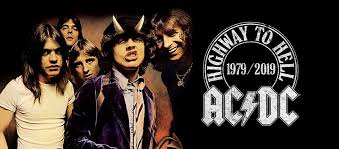

ac/dc
AC/DC are an Australian rock band formed in Sydney in 1973 by Scottish-born
brothers Malcolm and Angus Young.[1] Their music has been variously
described as hard rock, blues rock, and heavy metal;[2] however, the band
themselves describe their music as simply "rock and roll".[3] AC/DC
underwent several line-up changes before releasing their first album, High
Voltage, in 1975. Membership subsequently stabilised around the Young
brothers, singer Bon Scott, drummer Phil Rudd, and bass player Mark Evans.
Evans was replaced by Cliff Williams in 1977 for the album Powerage. In
February 1980, a few months after recording the album Highway to Hell, lead
singer and co-songwriter Bon Scott died of acute alcohol poisoning.[4] The
group considered disbanding but stayed together, bringing in Brian Johnson
as replacement for Scott.[5] Later that year, the band released their first
album with Johnson, Back in Black, which they dedicated to Scott's memory.
The album launched them to new heights of success and became one of the best
selling albums of all time.
Their last three albums were:
- Stiff upper lip
List of songs:
- "Stiff Upper Lip" 3:34
- "Meltdown" 3:41
- "House of Jazz" 3:56
- "Hold Me Back" 3:59
- "Safe in New York City" 3:59V
- "Can't Stand Still" 3:41
- "Can't Stop Rock 'n' Roll" 4:02
- "Satellite Blues" 3:46
- "Damned" 3:52
- "Come and Get It" 4:02
- "All Screwed Up" 4:36
- "Give It Up" 3:54
- black ice
- rust or bust